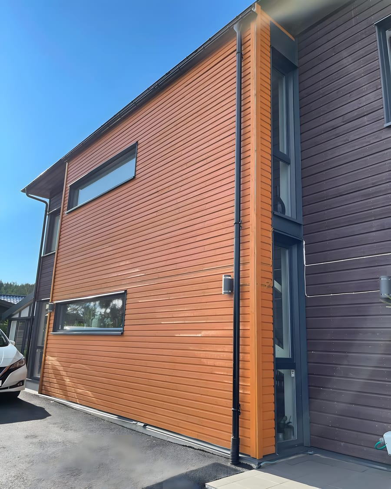
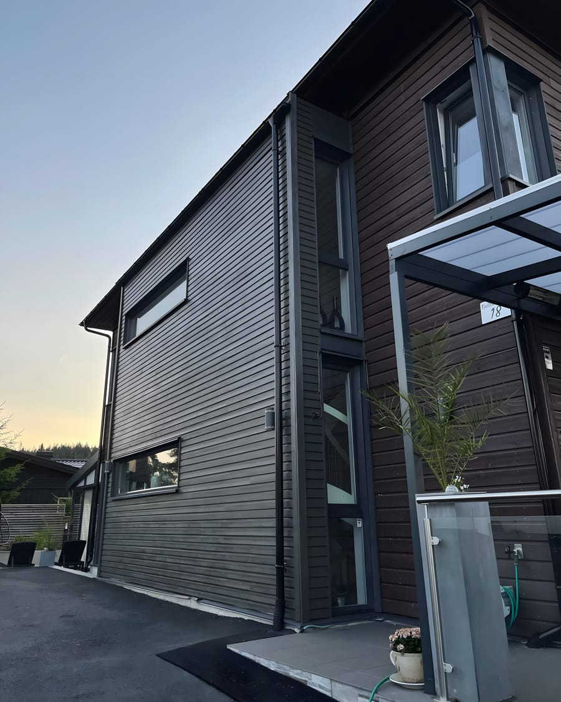
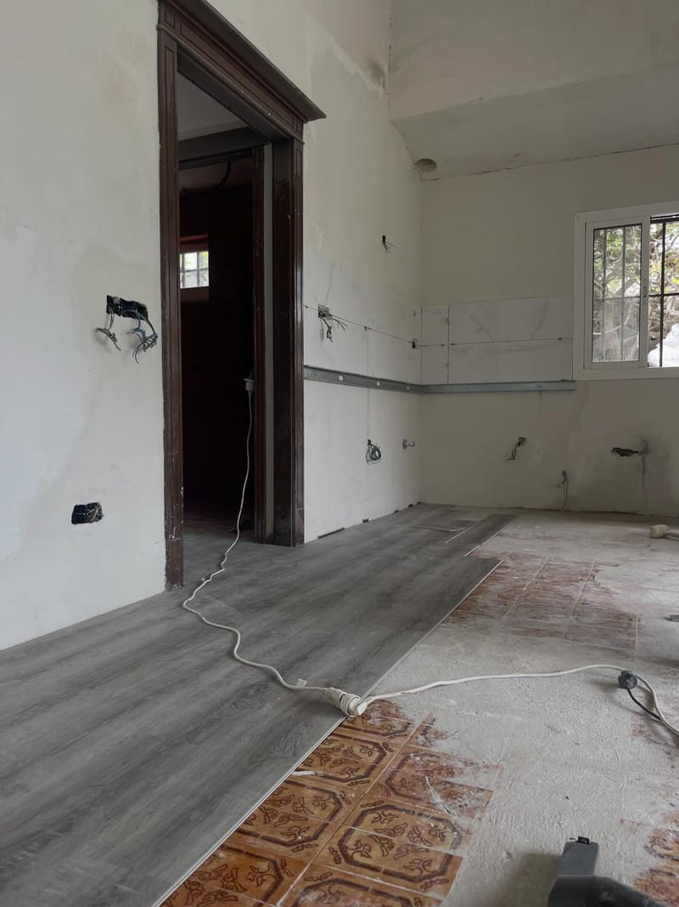
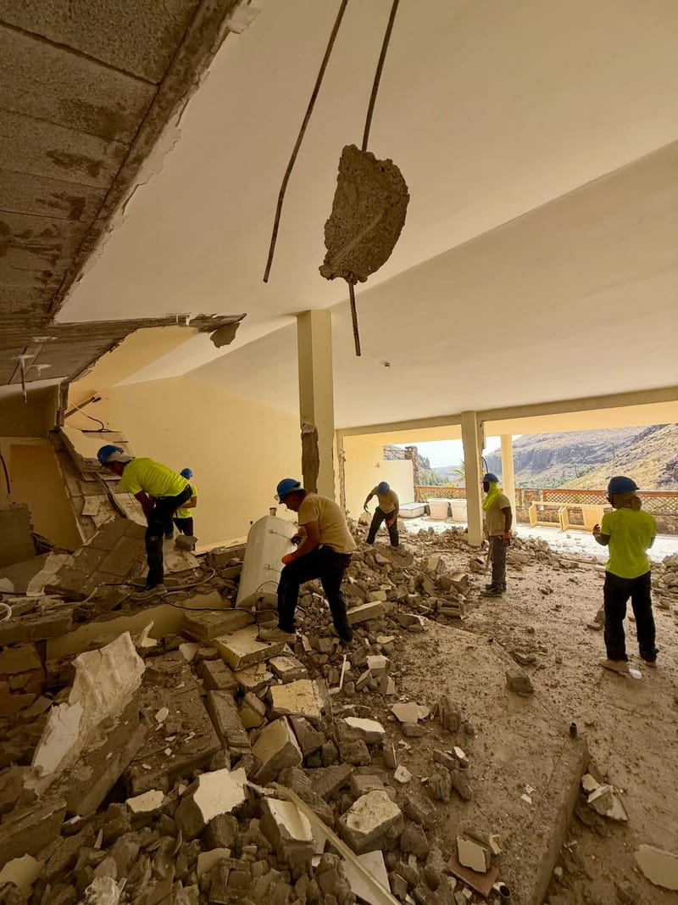
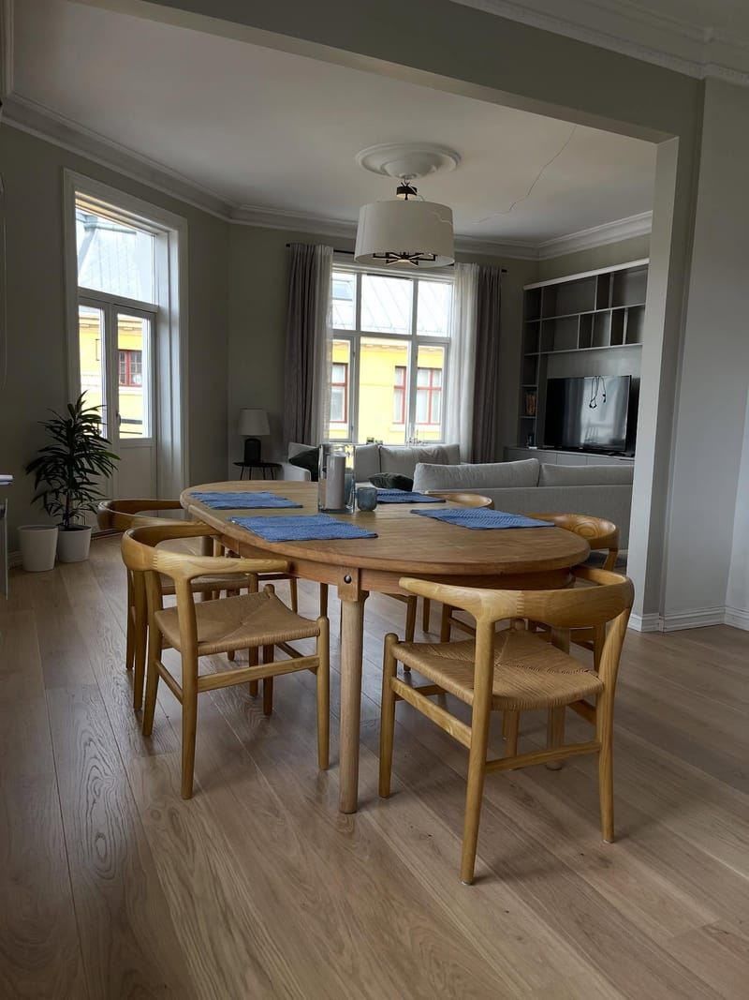

Reformas con estándar noruego en Gran Canaria
Más de 8 años de oficio. Aprendimos renovando casas en Oslo, Panamá y Estados Unidos; ahora construimos en Gran Canaria y te atendemos en español, noruego o inglés.

Antes y después
Obras reales, fotografiadas por nosotros. Mueve las lamas para pasar del antes al después.


Cocina completa
- Arguineguín
- 2026
Para una clienta noruega: se cambió todo.
- Fontanería
- Electricidad
- Alicatado
- Muebles y electrodomésticos
- Alisado y pintura


Salón
- Arguineguín
- 2026
La clienta quiso conservar parte de sus muebles y sumar dos sofás cama para su familia.
- Reforma
- Pintura
- Suelos


Reforma integral de un piso
- Oslo
- 2023
Un piso entero, de la obra a la entrega.
- Reforma integral


Pintura de fachada
- Oslo
- 2021
Revestimiento de madera repintado en gris antracita.
- Pintura exterior


Terraza
- Arguineguín
- 2024
Parte de la renovación completa de un apartamento para una clienta noruega.
- Albañilería
- Alicatado
- Pintura
Aprendimos el oficio en Noruega
Empezamos en Oslo pintando y renovando viviendas, y seguimos en Lørenskog con obra nueva, baños, cocinas, suelos y fachadas. En 2024 llegaron las primeras obras en Gran Canaria, muchas para clientes noruegos. Hoy somos AJÁ Construction Group y trabajamos igual: con orden, con limpieza y enseñando cada fase.
- 2021Oslo
ML Malerservice: pintura y renovación de viviendas.
- 2023Lørenskog
Marin López Prosjekter: obra nueva, baños, cocinas, suelos y fachadas.
- 2024Gran Canaria
Primeras obras en la isla: apartamentos, un hotel y viviendas en Arguineguín.
- 2026Gran Canaria
AJÁ Construction Group S.L.
Un equipo para toda la obra
Reformas integrales o un trabajo concreto. Estos son nuestros oficios.

Interiores y exteriores, retirada de tabiques, revestimientos y escombros.

Obra en general, tabiques, fachadas y terrazas.

Tabiques, techos y trasdosados.

Baños, cocinas, desagües y renovación de piscinas.

Instalación eléctrica y energía solar.

Barandillas, estructuras y cerrajería.

Parquet, tarima, alicatado y restauración de suelos de madera.

Alisado de paredes, pintura interior y exterior, papel pintado.

Cuidado de jardines y mantenimiento de viviendas.


Cada fase, a la vista

1Derribo y preparación
Retiramos tabiques, revestimientos y escombros, y dejamos el espacio listo.

2Estructura e instalaciones
Pladur, fontanería y electricidad nuevas, antes de cerrar paredes.

3Alisado y acabados
Paredes lisas, pintura, alicatado y suelos.

4Entrega limpia
Limpiamos y recogemos antes de entregarte la casa.


No hay obra sin equipo
Profesionales con experiencia y una misma manera de trabajar: hacerlo bien y cuidar cada detalle.

Estoy encantadísima con el resultado.
«Det er jeg kjempefornøyd med.»
Elisabeth, clienta noruega en Gran Canaria (2024)
- «Os encontré en Facebook.»
- «Fuisteis muy alegres y amables, y lo dejasteis todo recogido y bonito.»
- «Ya os he recomendado, y lo seguiré haciendo.»
Obras en Gran Canaria

Hotel en el sur de Gran Canaria
Restauración de la madera de las puertas. 2024

Apartamentos frente al mar
Suelo flotante restaurado y barandilla nueva. 2024

Complejo de apartamentos, Arguineguín
Renovación de la piscina. 2025

Parque en el sur de Gran Canaria
Demolición. 2026


Síguenos en obra
En Instagram contamos cada semana cómo avanzan nuestras obras. Estas son las últimas publicaciones.
Ver nuestro Instagram


Cuéntanos tu obra
Responde a tres preguntas y te abrimos WhatsApp con el mensaje escrito. Puedes escribirnos en español, noruego o inglés.